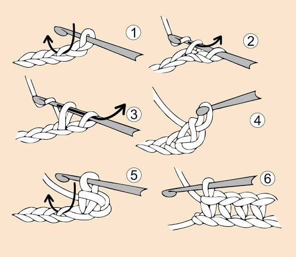

Sample Half-Double Crochet Square
Estimated Time: 20 – 30 Minutes
Materials Needed
- 5mm Crochet Hook
- Medium Weight Yarn (Any Colour)
- Yarn Needle
- Scissors
- Stitch Marker (Optional)
Abbreviations
- ch = Chain
- hdc = Half Double Crochet
- sl st = Slip Stitch
- FO = Fasten Off
Pattern Instructions (Half Double Crochet)

Step 1 (Foundation Chain)
Make a slip knot and chain 20 stitches (or your preferred length).
Add 2 extra chains to act as the turning chain.

Step 2 (Begin the First Stitch)
Yarn over once.
Insert your hook into the third chain from the hook.
Step 3 (Complete the Half Double Crochet)
Yarn over and pull through the stitch.
You should now have three loops on your hook.
Yarn over once more and pull through all three loops.
Step 4 (Finish the Row)
Work one half double crochet (hdc) into every chain across the row.
Keep your stitches even for a neat finish.
Step 5 (Turn Your Work)
Chain 2.
Turn your work to begin the next row.
Step 6 (Continue Crocheting)
Work one half double crochet into each stitch across every row.
Repeat until your swatch reaches the desired size.
Step 7 (Finished Half Double Crochet Swatch)
Fasten off the yarn and weave in all loose ends.
Your half double crochet swatch is now complete!
Half double crochet stitches create a fabric that is thicker than double crochet but slightly taller than single crochet, making them perfect for blankets, hats, scarves, and garments.